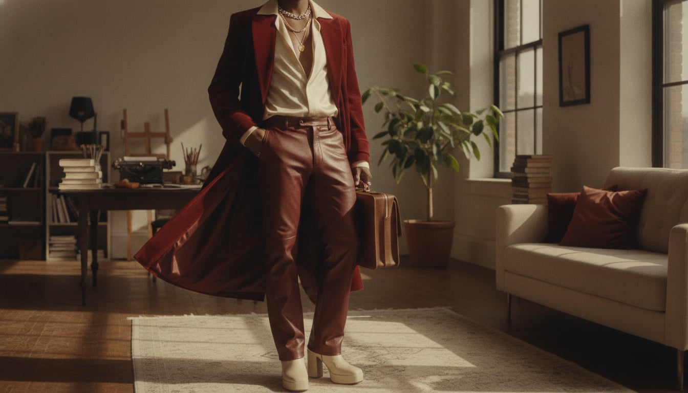
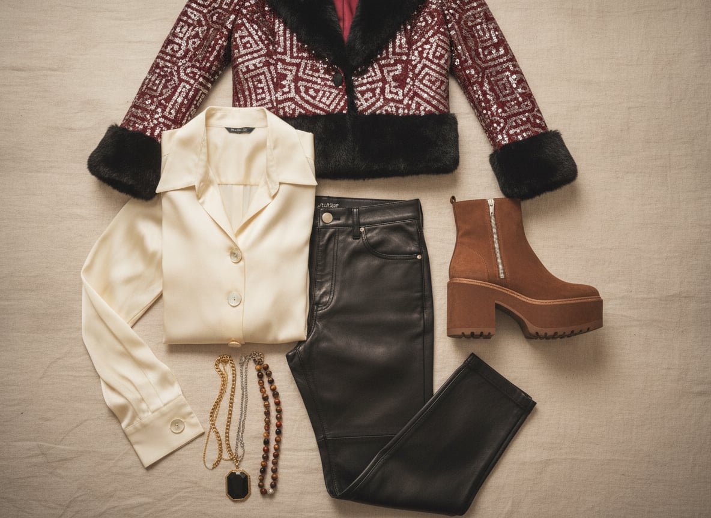

Glam rock built its wardrobe in Britain in the early 1970s as a direct rebuttal to the denim earnestness of the decade before it — David Bowie, Marc Bolan, and Roxy Music took the stage in platform boots, satin, and eyeliner, treating gender and glamour both as costumes to be tried on rather than rules to be followed. It was, among other things, one of the first menswear movements to argue that looking beautiful and looking dangerous could be the exact same outfit.
The trademark is theatrical excess with real nerve behind it: leather trousers cut close enough to matter, a shirt unbuttoned further than the room requires, platform boots that add both height and a certain difficulty to walking normally, all of it under enough eyeliner or glitter to make the point unmissable. Nothing about it is meant to be practical, which is rather the point — practicality was the previous decade's problem.
It suits people who think a night out deserves its own wardrobe logic entirely, separate from the daytime rules — who'd rather be looked at than looked over. There's real bravery underneath the performance: this look has never worked for anyone trying to blend in, and everyone who's worn it well knew that going in.
Glam rock's leather trouser — cut close enough to matter, unlike a biker's utilitarian leathers — turned a traditionally protective material into pure performance costume, worn by Bowie and Bolan specifically because it caught stage light the way denim never could.
A convincing silhouette in a synthetic material.
Shop this →Genuine lambskin at a broadly accessible luxury price.
Shop this →The two houses most associated with this exact silhouette at a runway level.
Shop this →Adding several inches of height for purely theatrical reasons, the platform boot became glam rock's signature footwear because it made an already dramatic silhouette taller and harder to walk in normally — the difficulty was part of the performance.
The silhouette at an accessible price, synthetic materials.
Shop this →Genuine leather with a more considered, better-balanced platform.
Shop this →Hand-finished leather at the runway level this look originally came from.
Shop this →A satin or silk shirt worn open well past daytime convention borrows its shine directly from stage lighting requirements — a matte cotton shirt simply didn't read from the back of a concert hall the way satin did.
A higher silk content and more considered cut.
Shop this →Pure silk with the drape and shine the whole look depends on.
Shop this →Fringe, sequins, and fur worn as ordinary outerwear rather than costume pieces let this wardrobe treat a jacket as pure spectacle — the point was never to blend the outerwear into an outfit, but to make it the outfit's entire argument.
Real sequin coverage at an accessible price, lighter base fabric.
Shop this →Better base construction, sometimes genuine period pieces.
Shop this →Hand-embroidered sequins or genuine fur on a couture-level base.
Shop this →Rings, chains, and pendants worn in deliberate excess borrowed from both rock stardom and a longer androgynous-glamour tradition, treating jewelry as costume rather than the restrained accent most other menswear traditions favor.
A convincing layered look at an accessible price.
Shop this →The house most associated with rock-and-roll jewelry excess at a luxury level.
Shop this →The leather trousers get swapped for a lighter satin version, sleeves stay unbuttoned regardless of temperature, platform boots stay on no matter what.
A fur or shearling coat over everything, still theatrical, with the boots getting a warmer lining but never a lower heel.
A vinyl or patent coat -- shiny regardless of the weather's mood -- because this wardrobe would never wear something purely practical.
The fur coat gets heavier, sequins somehow survive the season, and the boots get a platform sole rated for actual traction for once.
There isn't really a more formal setting than this wardrobe's default -- for genuine black tie, the satin shirt becomes a full tuxedo shirt, still unbuttoned further than convention allows.
Berlin, London in the 1970s if time travel were an option, and wherever the after-party actually is.
Bowie biographies, glam-era music journalism, and whatever's scandalous enough to read on a train specifically to be noticed.
Bowie, T. Rex, Roxy Music — the whole glam canon — played loud enough that the neighbors have opinions.
Mirrors, more mirrors, a lighting setup better than most photo studios, and at least one piece of furniture that looks like it belongs on a stage.
Karaoke treated as legitimate performance, a standing invitation to whatever's happening after midnight, and a genuine talent for making an entrance.